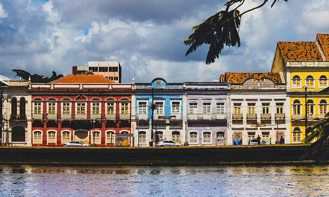
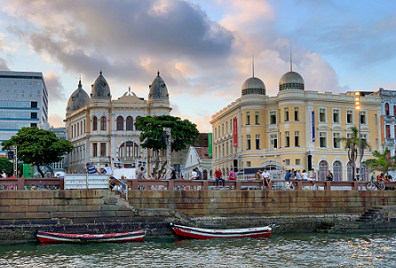

Recife
A capital do estado de Pernambuco, é bastante conhecida pela suas belezas naturais, arquitetura histórica e culinária rica. Além dos destaques culturais sobre as festas que acontecem, e os festejos carnavalescos recifenses que atraem uma multidão de turistas para a cidade, e a característica dança da região, o frevo.
Carnaval, o circuito Recife-Olinda está entre os mais tradicionais do país e movimenta as duas cidades, que ficam com as hospedagens e ruas lotadas de artistas e foliões. Ritmos locais, como frevo, maracatu, caboclinho e muitos outros animam a festa.
Marco Zero
Um dos pontos turíticos mais visitados da cidade, é o marco zero. A praça tem o nome original de Praça Barão do Rio Branco, todavia ficou conhecida como Praça do Marco Zero pelo fato de que nela encontra-se o quilometro zero das estradas de Pernambuco. É formada por um marco de cor vermelha doado pelo Clube do Automóvel. Na lateral da praça encontra-se a estatua do Barão do Rio Branco em bronze.
Como esse é um local especial da cidade, temos um contéudo exclusivo para vocês descobrirem mais sobre o Marco Zero.
